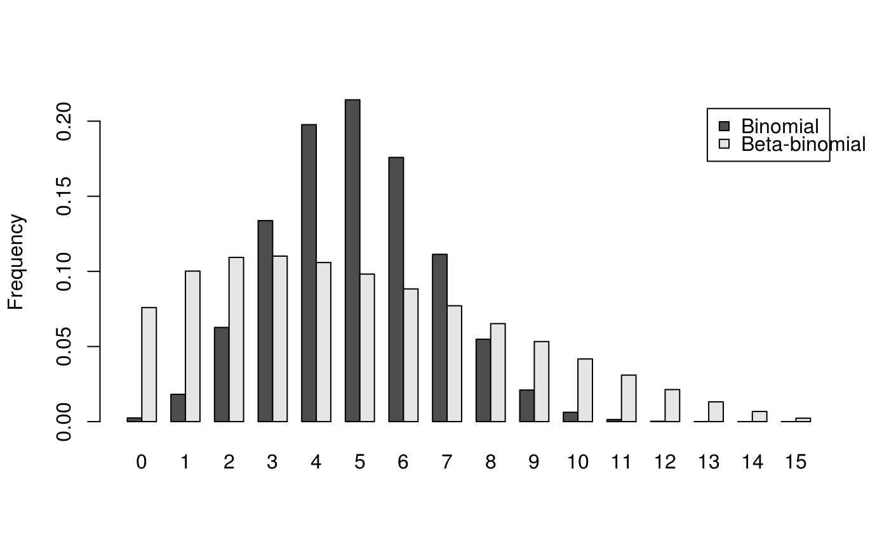

BetaBinomial.RdDensity, distribution function, quantile function and random generation for
the beta-binomial distribution with parameters size, prob,
theta, shape1, shape2. This distribution corresponds to
an overdispersed binomial distribution.
dbetabinom(x, size, prob, theta, shape1, shape2, log = FALSE) pbetabinom(q, size, prob, theta, shape1, shape2, lower.tail = TRUE, log.p = FALSE) qbetabinom(p, size, prob, theta, shape1, shape2, lower.tail = TRUE, log.p = FALSE) rbetabinom(n, size, prob, theta, shape1, shape2)
| x, q | Vector of quantiles. |
|---|---|
| size | Number of trials. |
| prob | Probability of success on each trial. |
| theta | Aggregation parameter (theta = 1 / (shape1 + shape2)). |
| shape1, shape2 | Shape parameters. |
| log, log.p | Logical; if TRUE, probabilities p are given as log(p). |
| lower.tail | [Not yet implemented]. |
| p | Vector of probabilities. |
| n | Number of observations. |
dbetabinom gives the density, pbetabinom gives the distribution
function, qbetabinom gives the quantile function and rbetabinom
generates random deviates.
Be aware that in this implementation theta = 1 / (shape1 +
shape2). prob and theta, or shape1 and
shape2 must be specified. if theta = 0, use *binom family
instead.
dbetabinom in the package emdbook
where the definition of theta is different.
# Compute P(25 < X < 50) for X following the Beta-Binomial distribution # with parameters size = 100, prob = 0.5 and theta = 0.35: sum(dbetabinom(25:50, size = 100, prob = 0.5, theta = 0.35))#> [1] 0.3054911# When theta tends to 0, dbetabinom outputs tends to dbinom outputs: sum(dbetabinom(25:50, size = 100, prob = 0.5, theta = 1e-7))#> [1] 0.5397943sum(dbetabinom(25:50, size = 100, shape1 = 1e7, shape2 = 1e7))#> [1] 0.5397944sum(dbinom(25:50, size = 100, prob = 0.5))#> [1] 0.5397945# Example of binomial and beta-binomial frequency distributions: n <- 15 q <- 0:n p1 <- dbinom(q, size = n, prob = 0.33) p2 <- dbetabinom(q, size = n, prob = 0.33, theta = 0.22) res <- rbind(p1, p2) dimnames(res) <- list(c("Binomial", "Beta-binomial"), q) barplot(res, beside = TRUE, legend.text = TRUE, ylab = "Frequency")# Effect of the aggregation parameter theta on probability density: thetas <- seq(0.001, 2.5, by = 0.001) density1 <- rep(sum(dbinom(25:50, size = 100, prob = 0.5)), length(thetas)) density2 <- sapply(thetas, function(theta) { sum(dbetabinom(25:50, size = 100, prob = 0.5, theta = theta)) }) plot(thetas, density2, type = "l", xlab = expression("Aggregation parameter ("*theta*")"), ylab = "Probability density between 25 and 50 (size = 100)")lines(thetas, density1, lty = 2)